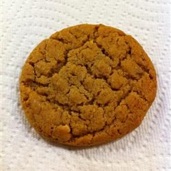

Dairy-Free Almond Butter Cookies

Description
Delicious cookies that have the same basic flavor as peanut butter cookies, but can be eaten by people with peanut and milk allergies!
I love to make these with my friend because she has a peanut allergy and I have a dairy allergy.
They taste great and no one can tell that they are dairy free!
Ingredients
- ½ cup of almond butter
- ½ cup of white sugar
- ½ cup of packed brown sugar
- ¼ cup of shortening
- ¼ cup of vegan margarine
- 1 egg
- 1 ¼ of cups all-purpose flour
- ¾ of teaspoon baking soda
- ½ of teaspoon baking powder
Steps
- Mix almond butter, white and brown sugars, shortening, margarine, and egg in a large bowl.
Stir in flour, baking baking soda, and baking powder until dough is combined.
- Shape dough into 1 1/4-inch balls. Place about 3 inches apart on ungreased cookie sheets.
Dip a fork in sugar and use it to flatten cookies in a crisscross pattern.
- Bake in the preheated oven until light golden brown, 9 to 10 minutes.
Cool for 5 minutes; remove from cookie sheets. Cool cookies on a wire rack.
Disclaimer
This recipe is originally from here.